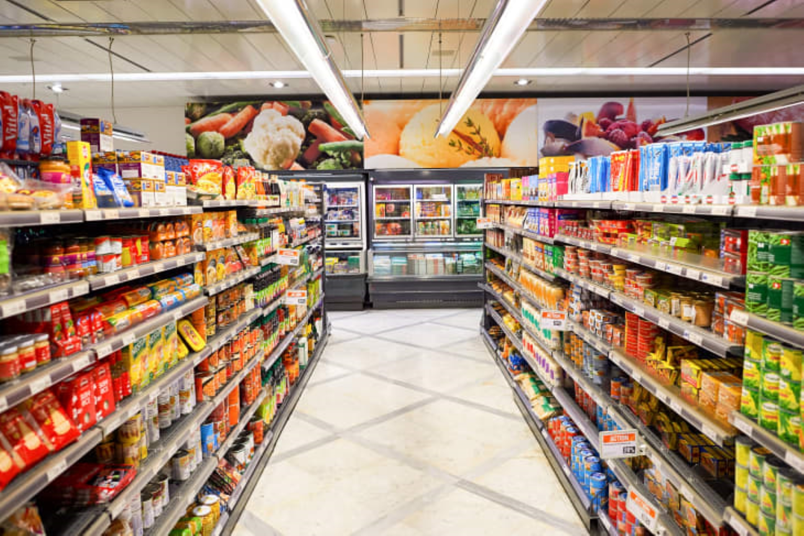

Car Park Project
Built a web application that filters and highlights parking options using reusable web components, a custom data pipeline, and a CSV dataset. Combined front-end and back-end development to create an intuitive search experience.
Software Developer
Software Developer skilled in Java, JavaScript, HTML, back-end, front-end and database SQL with a passion for thoughtful problem solving.
Built a web application that filters and highlights parking options using reusable web components, a custom data pipeline, and a CSV dataset. Combined front-end and back-end development to create an intuitive search experience.
Designed an enquiry management system in Java to streamline school administration processes and deliver responsive feedback to students and staff.

Produced a public awareness website using Bootstrap, custom CSS, and Java to encourage sustainable practices and highlight actionable ways to protect the planet.
Engineered an interactive adventure game integrating Java, HTML, CSS, API CRUD operations, Express.js, and Postman for a connected gameplay experience.

Developed a store platform with a direct database connection, using tables, functions, and procedures to manage inventory and transactions.